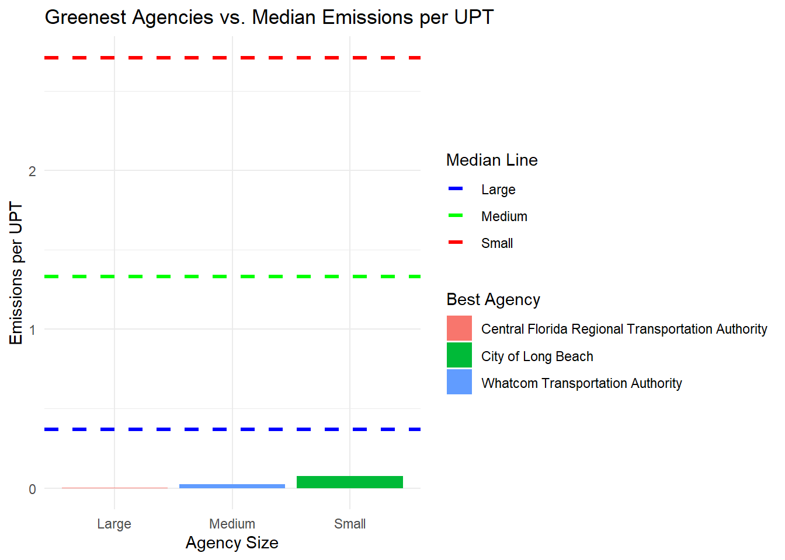
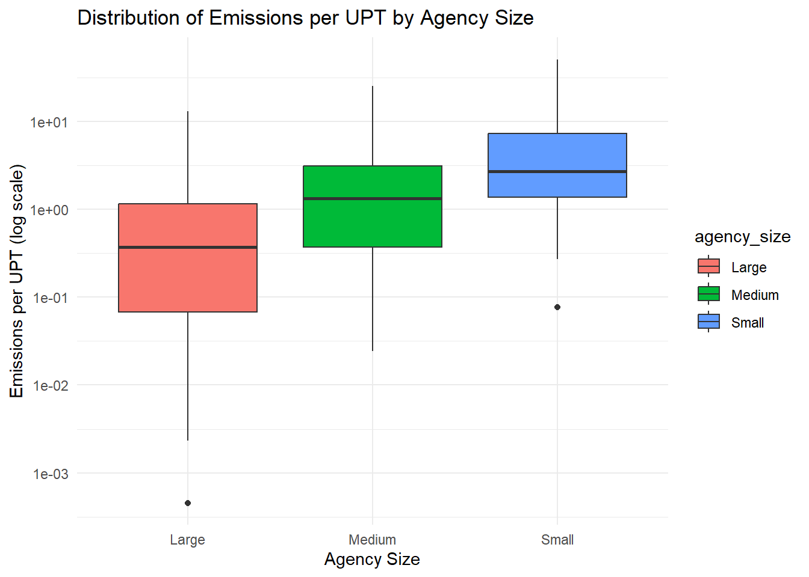

The Green Transit Alliance for Investigation of Variance (GTA IV) is proud to present this years Greener America Awards, where we will be awarding public transit systems all across America for their contribution to environmental conciousness.
The US Public Transit System has always been the backbone of transportation in America, serving millions of people everyday all while staying aware of environmental hazards surrounding the use of transportation such as carbon emissions or air pollution. Today, the Green Transit Alliance for Investigation of Variance will be giving awards to honor and congratulate many public transit systems for their commitment to sustainability. We hope that this will inspire more transit systems in America and all around the world to keep the environment sustainable and create awareness on the matter.
The smaller agencies out there will not go unnoticed as well, here in GTA IV we have calculated ways to award not only the largest and most used public transits, but also small and medium sized ones for their hardwork in preservation to be recognized.
Now, drumroll please as we start the awards……🥁🥁🥁
Greenest Transit Agency Award
The winners of the Greenest Transit Agency Award are….
Small Agency: City Of Long Beach, with an emission of 0.0765 kilograms of C02 per UPT, with a median score of 2.77 kg of C02 per UPT for small agencies.2
Medium Agency: Whatcom Transportation Authority, with an emission of 0.0242 kilograms of C02 per UPT, with a median of 1.33 kg of C02 per UPT for medium agencies.
Large Agency: Central Florida Regional Transportation Authority, with an emission of 0.000456 kilograms of C02 per UPT, with a median of 0.37 kg of C02 per UPT for large agencies.
The GTA IV calculated these statistics by computing the total kilograms of C02 emitted per gallon of different gases burned and then divided the total emissions by UPT to find which agencies emit the least amount of C02 by UPT.
Most Emissions Avoided Award
The winners of the Most Emissions Avoided Award are…
Small Agency: Trans-Bridge Lines, Inc. with 2925138 kilograms of C02 emissions avoided compared to the average standard, with the median emissions avoided being -303903.6 kg of C02 emissions for small agencies.
Medium Agency: Intercity Transit with 9092042 kilograms of C02 emission avoided compared to the average standard, with the median emissions avoided being -618120.8 kg of C02 emission for medium agencies.
Large Agency: MTA New York City Transit with 7299011485 kilograms of C02 emission avoided compared to the average standard, with the median emissions avoided being 7487465.4 kg of C02 emission for large agencies.
The GTA IV calculated these with the average miles per gallon being around 49 and the average amount of c02 being emitted per gallon being 8.887. Using these metrics, we calculated the hypothetical emissions and subtracted it from the total emissions to compare the total amount of emissions avoided.
Gas Guzzlers Award
While we want to recognize the public transit systems that are keeping the environment sustainable, it is also important to look at the ones that have the most inefficient fuel use and encourage them to do better in the future! The Gas Guzzler award is just that, and hopefully these transit systems are able to improve moving forward. The award goes to…
Small Agency: Valley Regional Transit, with 4.59 kilograms of C02 emission per mile, with the median emissions avoided being -303903.6 kg of C02 emissions for small agencies.
Medium Agency: Mid Mon Valley Transit Authority with 4.59 kilograms of C02 emission per mile, with the median emissions avoided being -618120.8 kg of C02 emission for medium agencies.
Large Agency: Central Ohio Transit Authroity with 2.61 kilograms of C02 emission per mile, with the median emissions avoided being 7487465.4 kg of C02 emission for large agencies.
The GTA IV calculated these by dividing the total emissions of all agencies by total amount of miles traveled by the agency. This allowed us to see which agencies in each size bracket emits the most per mile.
Thank You!
These are all the awards we have for this year, but don’t worry, there will be more next year! Hopefully these awards will motivate more public transit agencies to become environmentally conscious and help with sustainability for years to come.
Question 1: Which state has the most expensive retail electricity?
From the table, we can see Hawaii has the most expensive retail electricity costing an average of $386 per 1000 kWh.
Question 2: Which state has the ‘dirtiest’ electricity mix?
From the table, we can see the state with the dirtiest electricity mix is West Virginia, with 1925 pounds of CO2 emitted per MWh of electricity produced
Question 3: On average, how many pounds of CO2 are emitted per MWh of electricity produced in the US?
Code
average_CO2_per_MWh <- EIA_SEP_REPORT |>summarise(weighted_avg_CO2 =sum(CO2_MWh * generation_MWh) /sum(generation_MWh))average_CO2_per_MWh |>kable(caption ="Average CO2 Emissions per MWh")
Average CO2 Emissions per MWh
weighted_avg_CO2
805.3703
Question 4: What is the rarest primary energy source in the US? What is the associated cost of electricity and where is it used?
Code
rarest_energy_source <- EIA_SEP_REPORT |>group_by(primary_source) |>summarise(total_generation =sum(generation_MWh, na.rm =TRUE)) |>filter(total_generation ==min(total_generation, na.rm =TRUE))rarest_energy_source |>kable(caption ="Rarest Energy Source by Total Generation")
Rarest Energy Source by Total Generation
primary_source
total_generation
Petroleum
9194164
Question 5:Texas has a reputation as being the home of “dirty fossil fuels” while NY has a reputation as a leader in clean energy. How many times cleaner is NY’s energy mix than that of Texas?
Code
ny_cleanliness <- EIA_SEP_REPORT |>filter(state =="New York") |>pull(CO2_MWh)tx_cleanliness <- EIA_SEP_REPORT |>filter(state =="Texas") |>pull(CO2_MWh)clean_ratio <- tx_cleanliness / ny_cleanlinessclean_ratio_df <-data.frame(State_Comparison =c("Texas vs New York"), Clean_Ratio = clean_ratio)clean_ratio_df |>kable(caption ="CO2 per MWh Ratio: Texas vs New York")
CO2 per MWh Ratio: Texas vs New York
State_Comparison
Clean_Ratio
Texas vs New York
1.637931
2023 Annual Database Energy Consumption
Code
ensure_package(readxl)# Create 'data/mp02' directory if not already presentDATA_DIR <-file.path("data", "mp02")dir.create(DATA_DIR, showWarnings=FALSE, recursive=TRUE)NTD_ENERGY_FILE <-file.path(DATA_DIR, "2023_ntd_energy.xlsx")if(!file.exists(NTD_ENERGY_FILE)){ DS <-download.file("https://www.transit.dot.gov/sites/fta.dot.gov/files/2024-10/2023%20Energy%20Consumption.xlsx", destfile=NTD_ENERGY_FILE, method="curl")if(DS | (file.info(NTD_ENERGY_FILE)$size ==0)){cat("I was unable to download the NTD Energy File. Please try again.\n")stop("Download failed") }}NTD_ENERGY_RAW <-read_xlsx(NTD_ENERGY_FILE)
Warning: Expecting numeric in R1197 / R1197C18: got '-'
NTD_SERVICE_FILE <-file.path(DATA_DIR, "2023_service.csv")if(!file.exists(NTD_SERVICE_FILE)){ DS <-download.file("https://data.transportation.gov/resource/6y83-7vuw.csv", destfile=NTD_SERVICE_FILE, method="curl")if(DS | (file.info(NTD_SERVICE_FILE)$size ==0)){cat("I was unable to download the NTD Service File. Please try again.\n")stop("Download failed") }}NTD_SERVICE_RAW <-read_csv(NTD_SERVICE_FILE)
Rows: 1000 Columns: 35
── Column specification ────────────────────────────────────────────────────────
Delimiter: ","
chr (8): _5_digit_ntd_id, agency, max_reporter_type, max_organization_type,...
dbl (27): report_year, max_agency_voms, max_primary_uza_area_sq_miles, max_p...
ℹ Use `spec()` to retrieve the full column specification for this data.
ℹ Specify the column types or set `show_col_types = FALSE` to quiet this message.
Code
NTD_SERVICE <- NTD_SERVICE_RAW |>mutate(`NTD ID`=as.numeric(`_5_digit_ntd_id`)) |>rename(Agency = agency, City = max_city, State = max_state,UPT = sum_unlinked_passenger_trips_upt, MILES = sum_passenger_miles) |>select(matches("^[A-Z]", ignore.case=FALSE)) |>filter(MILES >0)
Question 1:Which transit service has the most UPT annually?
Code
most_upt_service <- NTD_SERVICE |>arrange(desc(UPT)) |>slice(1) |>select(Agency, City, State, UPT)most_upt_service |>kable(caption ="Agency with the Most UPT")
Agency with the Most UPT
Agency
City
State
UPT
MTA New York City Transit
Brooklyn
NY
2632003044
Question 2:What is the average trip length of a trip on MTA NYC?
Code
mta_nyc_avg_trip_length <- NTD_SERVICE |>filter(grepl("MTA", Agency)) |>mutate(avg_trip_length = MILES / UPT) |>summarize(avg_trip_length =mean(avg_trip_length, na.rm =TRUE))mta_nyc_avg_trip_length |>kable(caption ="Average Trip Length for MTA NYC")
Average Trip Length for MTA NYC
avg_trip_length
10.71179
Question 3:Which transit service in NYC has the longest average trip length?
Code
nyc_longest_trip <- NTD_SERVICE |>filter(City %in%c("New York City", "Brooklyn")) |>mutate(avg_trip_length = MILES / UPT) |>arrange(desc(avg_trip_length)) |>slice(1) |>select(Agency, City, avg_trip_length)nyc_longest_trip |>kable(caption ="City with the Longest Average Trip Length in NYC")
City with the Longest Average Trip Length in NYC
Agency
City
avg_trip_length
Private Transportation Corporation
Brooklyn
5.233385
Question 4:Which state has the fewest total miles travelled by public transit?
Code
state_fewest_miles <- NTD_SERVICE |>group_by(State) |>summarize(total_miles =sum(MILES, na.rm =TRUE)) |>arrange(total_miles) |>slice(1)state_fewest_miles |>kable(caption ="State with the Fewest Total Miles")
State with the Fewest Total Miles
State
total_miles
NH
3749892
Question 5:Are all states represented in this data?
Code
all_states <- state.abb missing_states <-setdiff(all_states, unique(NTD_SERVICE$State))missing_states |>kable(caption ="States Missing from the NTD_Service Dataset")
States Missing from the NTD_Service Dataset
x
AZ
AR
CA
CO
HI
IA
KS
LA
MO
MT
NE
NV
NM
ND
OK
SD
TX
UT
WY
Joining Datasets
Code
colnames(NTD_SERVICE)[which(names(NTD_SERVICE) =="Agency")] <-"Agency Name"EIA_SEP_REPORT <- EIA_SEP_REPORT |>select(-state)NTD_SERVICE <- NTD_SERVICE |>mutate(State =as.character(State))EIA_SEP_REPORT <- EIA_SEP_REPORT |>mutate(abbreviation =as.character(abbreviation))combined_data <- NTD_SERVICE |>inner_join(NTD_ENERGY, by =c("NTD ID", "Agency Name"))final_data <- combined_data |>left_join(EIA_SEP_REPORT, by =c("State"="abbreviation"))final_data |>head() |>kable(caption ="Preview of Final Combined Data")
Preview of Final Combined Data
Agency Name
City
State
UPT
MILES
NTD ID
Mode
Bio-Diesel
Bunker Fuel
C Natural Gas
Diesel Fuel
Electric Battery
Electric Propulsion
Ethanol
Methonal
Gasoline
Hydrogen
Kerosene
Liquified Nat Gas
Liquified Petroleum Gas
CO2_MWh
primary_source
electricity_price_MWh
generation_MWh
Spokane Transit Authority
Spokane
WA
9403739
46318134
2
Demand Response
0
0
0
131642
0
0
0
0
152360
0
0
0
0
292
Hydroelectric
95.8
102960605
Spokane Transit Authority
Spokane
WA
9403739
46318134
2
Bus
0
0
0
1335531
1202138
0
0
0
0
0
0
0
0
292
Hydroelectric
95.8
102960605
Spokane Transit Authority
Spokane
WA
9403739
46318134
2
Vanpool
0
0
0
0
0
0
0
0
56463
0
0
0
0
292
Hydroelectric
95.8
102960605
Lane Transit District
Eugene
OR
6311613
22779952
7
Demand Response
0
0
0
0
0
0
0
0
94756
0
0
0
0
344
Hydroelectric
103.2
61691869
Lane Transit District
Eugene
OR
6311613
22779952
7
Bus
0
0
0
450303
920696
0
0
0
5806
0
0
0
0
344
Hydroelectric
103.2
61691869
Lane Transit District
Eugene
OR
6311613
22779952
7
Bus Rapid Transit
212371
0
0
0
0
0
0
0
0
0
0
0
0
344
Hydroelectric
103.2
61691869
After joining the three tables, we used mutute to compute the total emissions for the row using data from the EIA website.
We categorized the agencies by size by the UPT of each transit system, with systems that have over 5000000 considered large, 500000 to 5000000 considered medium, and anything less is a small agency. We also calculated the emissions per UPT and emissions per mile by dividing total emissions by UPT and dividing total_emissions by total miles.
`summarise()` has grouped output by 'agency_size'. You can override using the
`.groups` argument.
Code
best_efficiency <- most_efficient |>group_by(agency_size) |>slice_min(order_by = avg_emissions_per_UPT, n =1)
Greenest Agencies Calculation Code
We calculated this by filtering by emissions_per_UPT to see the lowest for every agency size to get the 3 greenest agencies.
Code
median_emissions <- final_data |>group_by(agency_size) |>summarise(median_emissions_per_UPT =median(emissions_per_UPT, na.rm =TRUE))greenest_agencies <- final_data |>group_by(agency_size) |>filter(emissions_per_UPT ==min(emissions_per_UPT, na.rm =TRUE)) |>ungroup()greenest_agencies |>select(`Agency Name`, agency_size, emissions_per_UPT) |>left_join(median_emissions, by ="agency_size") |>kable(caption ="Greenest Agencies and Median Emissions per UPT by Agency Size")
Greenest Agencies and Median Emissions per UPT by Agency Size
Agency Name
agency_size
emissions_per_UPT
median_emissions_per_UPT
Whatcom Transportation Authority
Medium
0.0241804
1.3337899
City of Long Beach
Small
0.0764815
2.7111502
Central Florida Regional Transportation Authority
Large
0.0004559
0.3708156
Code
median_emissions_fixed <- median_emissions |>distinct()ggplot(greenest_agencies |>left_join(median_emissions, by ="agency_size"), aes(x = agency_size, y = emissions_per_UPT, fill =`Agency Name`)) +geom_bar(stat ="identity", position ="dodge") +geom_hline(data = median_emissions_fixed, aes(yintercept = median_emissions_per_UPT, color = agency_size), linetype ="dashed", size =1.2) +scale_color_manual(values =c("Large"="blue", "Medium"="green", "Small"="red")) +labs(title ="Greenest Agencies vs. Median Emissions per UPT",x ="Agency Size", y ="Emissions per UPT",fill ="Best Agency",color ="Median Line") +theme_minimal()
Warning: Using `size` aesthetic for lines was deprecated in ggplot2 3.4.0.
ℹ Please use `linewidth` instead.

From the plot, we are able to see the median emission per UPT from the line, while the bars represent the agencies with the lowest emission, showing how big of an impact they are making with lower emissions. Most Emissions Avoided Award Calculation Code
We calculated this by finding the average mile per gallon of a vehicle and the C02 emission per gallon and found the hypothetical emission by diving miles by average mile per gallon and then multiplying it by galloon. We then subtracted the hypothetical emissions by total emissions to see which agencies saved the most.
`summarise()` has grouped output by 'agency_size'. You can override using the
`.groups` argument.
Code
median_emissions_avoided <- final_data |>group_by(agency_size) |>summarise(median_emissions_avoided =median(emissions_avoided, na.rm =TRUE))final_results <- most_emissions_avoided |>left_join(median_emissions_avoided, by ="agency_size")kable(final_results, caption ="Agency with the Most Emissions Avoided and Median Emissions Avoided by Agency Size")
Agency with the Most Emissions Avoided and Median Emissions Avoided by Agency Size
agency_size
Agency Name
total_emissions_avoided
median_emissions_avoided
Large
MTA New York City Transit
7299011485
7487465.4
Medium
Intercity Transit
9092042
-618120.8
Small
Trans-Bridge Lines, Inc.
2925138
-303803.6
Gas Guzzlers Award Calculation Code
We calculated Gas Guzzlers by filtering to see which agencies emit the most C02 by mile.
Code
gas_guzzler_award <- final_data |>group_by(agency_size) |>filter(emissions_per_mile ==max(emissions_per_mile, na.rm =TRUE)) |>select(`Agency Name`, City, State, agency_size, emissions_per_mile, total_emissions)kable(gas_guzzler_award, caption ="Gas Guzzler Award - Agency with Highest Emissions Per Mile")
Gas Guzzler Award - Agency with Highest Emissions Per Mile
Agency Name
City
State
agency_size
emissions_per_mile
total_emissions
Valley Regional Transit
Meridian
ID
Medium
4.591114
20562056
Mid Mon Valley Transit Authority
Charleroi
PA
Small
4.586857
10641127
Central Ohio Transit Authority
Columbus
OH
Large
2.606710
133676175
Code
ggplot(final_data, aes(x = agency_size, y = emissions_per_UPT, fill = agency_size)) +geom_boxplot() +scale_y_log10() +labs(title ="Distribution of Emissions per UPT by Agency Size", x ="Agency Size", y ="Emissions per UPT (log scale)") +theme_minimal()
Warning: Removed 4 rows containing non-finite outside the scale range
(`stat_boxplot()`).

We had to scale the plot using log because the values for large agencies were too big, then we are able to visualize the distributions per UPT by agency size and the dots represent outliers in those plots. Based off the graph, we can see the highest points, lowest points, and the median.
Footnotes
All images were created using Canva AI Image Generator↩︎
Unlinked Passenger Trips, the distinct number of trips taken on public transit.↩︎